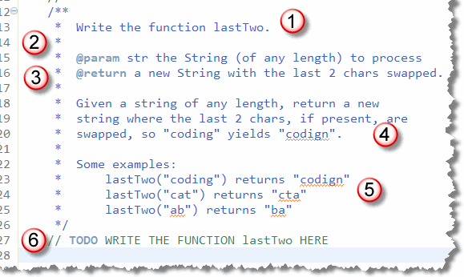
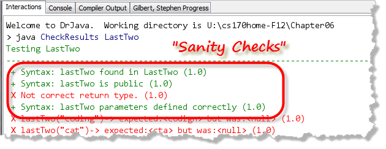
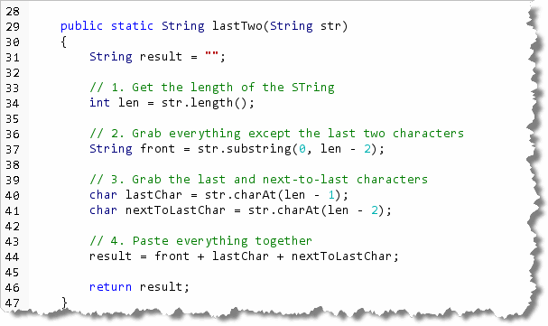

This week, the focus is on logic. Now, it's
your turn to get some practice writing your own logical methods.
For this problem, I want you to write a method that
make decisions using the if statement.
The lastTwo Method
Place your solution in LastTwo.java, which you'll find in this
week's code folder.
Here's the documentation for your method:

Just like the methods you worked on earlier, this problem:- Tells you the name of the method you need
to write; in this case,
lastTwo. - Tells you the name and type of each parameter.
This method has only one
Stringparameter, namedstr. - Tells you what kind of value the method is going
to return. This method returns a new
String.
As with the other examples you've seen, there is also a narrative explanation, and a few examples, but you really don't need that to get started, do you?
Before Everything: Write a Skeleton
At this point, without knowing anything else, you can write
a syntactically correct method, that compiles and can be
tested. Add your code at the section marked 6 in the previous
picture:
 Notice how we can write the header by knowing the return type,
name and parameters. We write the "skeleton" body by:
Notice how we can write the header by knowing the return type,
name and parameters. We write the "skeleton" body by:
- Creating a
resultvariable of the same type as the method return type and initializing it to some value. (Usuallyfalse,0or the emptyString, depending on the method type.) - Returning the
resultat the end of the method.
Note that you don't have to use the static keyword on
your methods. You don't need it if all of your testing is
going to be with the DrJava Check program. If you want to add
a main() method and call your method
from that main() method, then you will need
to add the static keyword. Check
will work fine either way.
Once this is done, you can run the Check program to
test the method. You'll see it passes at least one of the tests,
but fails all the others.
 To complete the problem,
you'll need to go back to the problem description and
use some logic to actually solve the problem.
To complete the problem,
you'll need to go back to the problem description and
use some logic to actually solve the problem.
Sanity Check First
Suppose, when writing the skeleton for your method, you had
written public static void lastTwo...,
using void for the return type, instead of
String, as the problem requires.
Although your code would compile, I can't actually test it
correctly, since the test program expects a String
result, but you've supplied nothing.

To check this, the first four tests every time you Check a method, are sanity check tests. The test to see if you've spelled the name correctly, you've made your method public, you have the correct return type, and you've passed the correct number and type of parameters.If any of these first four checks fail, you must fix that before going on. None of the other checks will work until those four are correct.
Handle the Normal Logic
Rather than thinking about the exceptional situations, try to
figure out how to solve the "normal" situation. What steps would
you need to perform, for instance, if every input String
was guaranteed to be at least two characters long?
Well, that's pretty straightforward. Here's some code that
does it:

- First, find out how long the input
Stringis and store that in a variable. We can use theString length()method for that. - Next, use the
substring()method, along with the length to grab the front part of the input string; everything except for the last two characters. - To grab the last two characters, we can use the
String charAt()method and store the results in another pair of variables:charvariables this time. (Remember that the last character is at position length - 1 and the next-to-last character will be at length - 2). - Finally, we can put everything together by using concatenation, simply reordering the last and next-to-last characters when the result is reassembled.
When we run the tests this time, you'll see that all of them
pass except two. As you can see from the picture, these are the
tests where the input String is less than two
characters long:
 This is where we need the
This is where we need the if statement.
Handling Unusual Input
Since the failed tests only occur when the length of the
input String is less than two, we can add an
if-else statement to only perform the normal
processing when the input has adequate characters. If the
input String is too short, we'll just set
result equal to the original input.
Once you have created the program, compile it and then Check your results. Keep trying until you get a perfect score.